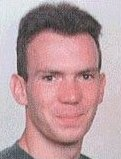
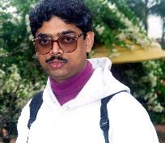

|
 |
 |
 |
|
 |
AKIRA team | |
||
|
|
|
|
|
|
AKIRA team | |
||
Fabien Azavant [www]
Fabien is a visiting scholar from the French Ecole
Polytechnique from which he will graduate next July. He is currently
working on a generic database representation for HTML and XML documents,
as part of the on-going K2 project at the University of Pennsylvania.
He will pursue his studies in telecommunications at the Ecole
Nationale Supérieure des Télécommunications in
Paris.
Raman Chandrasekar [www]
Raman Chandrasekar is a post-doctoral Visiting Scholar
at the University of Pennsylvania, affiliated with the Institute for Research
in Cognitive Science (IRCS) and the Center for Advanced Study of India
(CASI). Much of his recent work has been in the areas of information retrieval
and heuristic simplification of sentences. Chandrasekar has been working
with Aravind Joshi and Srinivas on Glean, an automated information filtering
system. The Glean system uses information latent in text, including syntactic
information got from `supertagging', to filter out irrelevant items returned
by information retrieval (IR) systems and web search engines, and thus
increase the precision of retrieval.
Zoé Lacroix [www]
Zoé is a postdoctoral fellow at the Institute
for Research in Cognitive Science (IRCS) of the University
of Pennsylvania, where she took the initiative of the AKIRA project.
She defended her Ph.D. thesis in June 1996 at the University of Paris XI
(France). Her previous research done at the Verso
Project (Inria-Rocquencourt, France)
as well as LRI (Université Paris-Sud,
France), covers Database Views, Object Oriented Databases, Constraint Databases,
Optimization, Deductive Databases, Database Theory, Finite Model Theory,
etc.
Arnaud Sahuguet [www]
Arnaud graduated from the Ecole
Polytechnique in 1994 and from the Ecole
Nationale des Ponts et Chaussées in 1996. Currently, he is a
Ph.D. candidate in computer science at the University of Pennsylvania.
His research interests include cryptography and electronic commerce, information
retrieval/extraction and database technology.
B. Srinivas [www]He
defended his Ph.D and left IRCS (to AT&T labs.) and the AKIRA team.
We do not forget he did the difficult first steps with us.
 |
 |
||
| Fabien | Chandrasekar | Zoé | Arnaud |